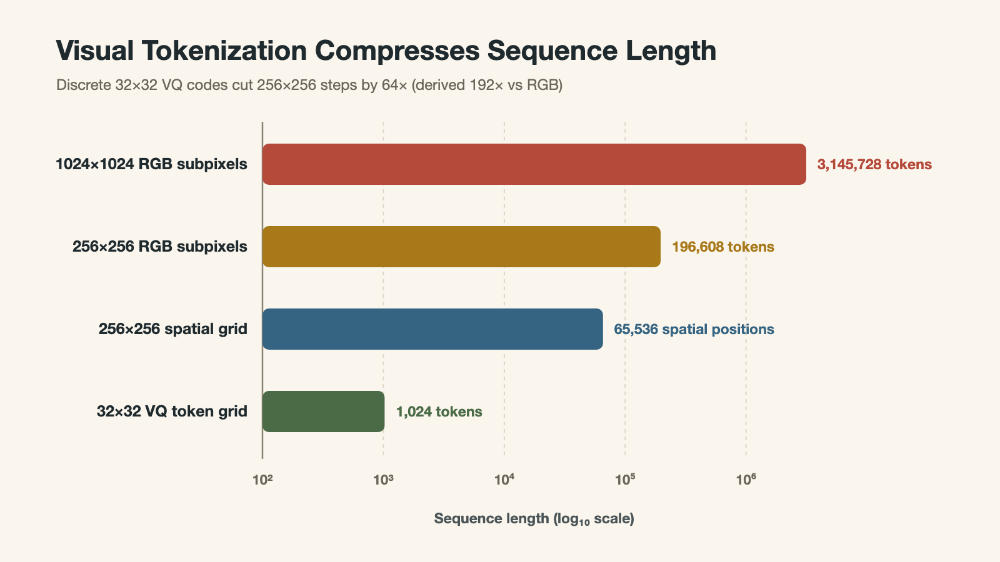

Turning Images into Discrete Tokens for Generation
CMU Advanced NLP · Lecture 12: Multimodal Modeling II
Lecture 11 extended a text language model to read images (multi-to-text) by projecting CLIP ViT patch embeddings into the LLM input sequence. Moving from visual understanding to visual generation (multi-to-image and multi-to-multi, such as ChatGPT 4o editing or generating an image inside a chat turn; slides, pp. 2–3) raises a sharper architectural question: can a single autoregressive transformer generate both text and images without separate adapter bridges?
Sean Welleck’s Lecture 12 on the CMU Advanced NLP Fall 2025 schedule (slides PDF, code directory 12_multimodal_ii) develops that unified formulation in four steps:
- Four generative paradigms frame the design space—autoregressive models, VAEs, GANs, and diffusion (slides, pp. 5–11).
- Pixel-level autoregression applies next-token cross-entropy directly to flattened RGB pixels, but runs into a quadratic sequence-length bottleneck (slides, pp. 13–18).
- VQ-VAE and VQ-GAN learn a compact discrete image tokenizer and detokenizer so a transformer can model
1,024spatial tokens per image alongside text (slides, pp. 19–40). - Diffusion models offer a continuous iterative denoising alternative, culminating in CLIP-conditioned text-to-image pipelines such as DALL-E 2 (slides, pp. 41–46).

Four generative paradigms and the pixel-sequence bottleneck
Before settling on discrete tokens, the lecture contrasts four generative modeling families (slides, pp. 6–11):
- Autoregressive models (p. 7): Factorize the joint distribution sequentially as \(p_\theta(x_0)\prod_{t=1}^T p_\theta(x_t \mid x_{<t})\), generating one dimension (token or subpixel) at a time.
- Variational Autoencoders (VAEs, p. 8): Pair a learned encoder \(q_\phi(z \mid x)\) with a decoder \(p_\theta(x \mid z)\) through a compressed latent representation \(z\).
- Generative Adversarial Networks (GANs, p. 9): Train a generator \(G(z)\) to fool a discriminator \(D(x)\) that separates real images from generated samples \(x' = G(z)\).
- Diffusion models (p. 10): Gradually corrupt an image \(x_0 \to x_1 \to \dots \to z\) with noise and learn to reverse each denoising step.
If we want one transformer to handle text and images natively without task-specific adapters (slides, p. 12; note the schematic on slide 12 writes Transformer Encoder inside the box even though the surrounding token stream is generated causally up to Done!), the simplest first attempt is pixel-level autoregression (slides, pp. 13–14).
Given an image \(x_{\text{img}} \in \mathbb{R}^{H \times W \times C}\) flattened in raster order into \(T\) discrete channel values \(x_1, \dots, x_T\)—mapping raw 8-bit pixel intensities \(0, \dots, 255\) to the 1-based token IDs \(x_t \in \{1, 2, \dots, 256\}\) on slide 14—maximum-likelihood training minimizes the exact same next-token cross-entropy used for language models:
\[ \mathcal{L}_{\text{MLE}} = \sum_{t=1}^{T} -\log p_\theta(x_t \mid x_{<t}). \]
Early models such as PixelRNN and PixelCNN (van den Oord et al. 2016a; slides, pp. 15–16), Conditional PixelCNN for the class-conditional dog samples (van den Oord et al. 2016b; slide 16), and Image Transformer (Parmar et al. 2018; slide 17) proved that likelihood-based pixel prediction works, but hit an immediate scaling wall (slide 18):
- A \(1024 \times 1024\) RGB image (\(C=3\)) unfolds into \(1024 \times 1024 \times 3 = 3{,}145{,}728\) tokens (“3 million tokens” on slide 18).
- Full causal self-attention over \(T \approx 3.15 \times 10^6\) tokens scales as \(\mathcal{O}(T^2)\) per layer, forcing Image Transformer into local 2D query-block and memory-block attention patterns (slide 18).
- Even at \(256 \times 256\), modeling pixels directly requires \(65{,}536\) spatial positions (slide 34)—or \(196{,}608\) RGB subpixel tokens (derived: \(256^2 \times 3\))—far too long to interleave comfortably inside a language model context.
From continuous VAEs to VQ-VAE discrete codebooks
To shrink image sequences from millions or tens of thousands of raw pixels down to roughly \(1{,}024\) discrete tokens (say, from a vocabulary of \(8{,}000\) token IDs; slide 20), we need a learned image tokenizer and detokenizer.
Standard VAE gives continuous latents, not vocabulary IDs
A standard Variational Autoencoder (Kingma & Welling 2013; slides, pp. 21–26) assumes data \(x\) is generated by sampling a continuous latent \(z \sim p(z) = \mathcal{N}(0, I)\) and decoding \(x \sim p_\theta(x \mid z)\), while an inference network \(q_\phi(z \mid x)\) encodes inputs back into latent space. Training minimizes the negative evidence lower bound (ELBO), balancing reconstruction quality against closeness to a standard Gaussian prior (slides, pp. 24–25):
\[ \mathcal{L}_{\text{VAE}}(x) = -\mathbb{E}_{q_\phi(z \mid x)}\!\left[\log p_\theta(x \mid z)\right] + D_{\text{KL}}\!\left(q_\phi(z \mid x) \,\|\, \mathcal{N}(0, I)\right). \]
This produces smooth continuous latent manifolds (illustrated by Frey Face and MNIST grids on slide 26), but continuous vectors \(z \in \mathbb{R}^d\) cannot serve directly as discrete token IDs inside a language model’s softmax vocabulary (slide 27).
VQ-VAE replaces the Gaussian latent with nearest-neighbor quantization
VQ-VAE (van den Oord et al. 2017; slides, pp. 28–30) turns continuous encoder outputs into discrete indices over a learned codebook \(E = \{e_1, \dots, e_K\} \subset \mathbb{R}^d\):
- Encoder: A convolutional encoder maps image \(x\) to a spatial grid of continuous vectors; at each spatial site, the output vector is \(z_e(x) \in \mathbb{R}^d\) (slides, pp. 28, 30).
- Quantizer: Each \(z_e(x)\) is snapped to its nearest codebook entry in Euclidean distance: \[ k^* = \arg\min_{j \in \{1, \dots, K\}} \|z_e(x) - e_j\|_2, \qquad z_q(x) = e_{k^*}, \qquad q(z = k \mid x) = \begin{cases} 1 & \text{if } k = k^*, \\ 0 & \text{otherwise.} \end{cases} \]
- Decoder: The quantized grid \(z_q(x)\) feeds into the decoder \(p(x \mid z_q(x))\) to reconstruct the image.
Under a uniform categorical prior \(p(z = k) = 1/K\), the KL divergence \(D_{\text{KL}}(q(z \mid x) \,\|\, p(z)) = \log K\) per spatial site is constant (van den Oord et al. 2017, §3.1), so no KL penalty appears in the VQ-VAE training loss. Instead, slide 29 breaks training into three terms:
\[ \mathcal{L}_{\text{VQ-VAE}} = -\log p(x \mid z_q(x)) + \left\|\operatorname{sg}[z_e(x)] - e_{k^*}\right\|_2^2 + \beta \left\|z_e(x) - \operatorname{sg}[e_{k^*}]\right\|_2^2, \]
where \(\operatorname{sg}[\cdot]\) is the stop-gradient operator (detach() in PyTorch) and \(\beta > 0\) is the commitment weight (\(\beta = 0.25\) is standard in van den Oord et al. 2017). Notation note: both van den Oord et al. (2017, Eq. 3) and slide 29 write \(+\log p(x \mid z_q(x))\) symbolically alongside the two squared-error penalties; minimizing total loss requires the negative log-likelihood \(-\log p(x \mid z_q(x))\), consistent with \(-\log p(x \mid z)\) on slides 24–25.
![Diagram titled Straight-Through Gradient Bypasses Discrete Lookup. Top sage box shows Codebook E with K vectors in R^d. Middle blue row connects Image x to Encoder z_e(x), dashed Quantizer z_q equals e_k* (nearest e_j), Decoder p(x | z_q), and Output x-hat. Vertical sage arrows connect Codebook E and Quantizer for Codebook loss, and a curved sage arrow from Quantizer to Encoder shows Commitment loss. Below the Quantizer, a curved terracotta arrow copies dL_rec/dz_q straight back to z_e(x) to bypass zero gradient of discrete argmin lookup.](anlp12-assets/vqvae-ste-gradient.png)
Because \(\arg\min\) is piecewise constant, \(\frac{\partial z_q}{\partial z_e} = 0\) almost everywhere. Each of the three mechanisms handles a distinct part of training (slides, p. 29):
- Straight-through estimator (STE) for reconstruction: In the forward pass \(z_q = e_{k^*}\), while in the backward pass the gradient at \(z_q\) is copied unmodified to \(z_e\) (
z_q = z_e + (e - z_e).detach()), giving \(\frac{\partial \mathcal{L}_{\text{rec}}}{\partial z_e} \approx \frac{\partial \mathcal{L}_{\text{rec}}}{\partial z_q}\). - Codebook update (\(\|\operatorname{sg}[z_e(x)] - e_{k^*}\|_2^2\)): Holds \(z_e(x)\) fixed and moves the selected codebook embedding \(e_{k^*}\) toward the encoder output (online \(k\)-means dictionary learning).
- Commitment loss (\(\beta \|z_e(x) - \operatorname{sg}[e_{k^*}]\|_2^2\)): Holds \(e_{k^*}\) fixed and pulls \(z_e(x)\) toward \(e_{k^*}\) so encoder magnitudes cannot drift arbitrarily while the codebook lags behind.
Constructed 2D VQ-VAE gradient check (not lecture data): Suppose \(d=2\), \(\beta = 0.25\), codebook vectors are \(e_1 = (0.0, 0.0)\), \(e_2 = (1.0, 0.5)\), \(e_3 = (-1.0, 1.0)\), and the encoder outputs \(z_e = (0.8, 0.3)\).
- Nearest-neighbor selection: Squared Euclidean distances are \(\|z_e - e_1\|_2^2 = 0.73\), \(\|z_e - e_2\|_2^2 = (-0.2)^2 + (-0.2)^2 = 0.08\), and \(\|z_e - e_3\|_2^2 = 3.73\). Thus \(k^* = 2\) and \(z_q = e_2 = (1.0, 0.5)\).
- Codebook gradient: \(\nabla_{e_2}\|\operatorname{sg}[z_e] - e_2\|_2^2 = 2(e_2 - z_e) = (0.4, 0.4)\), while \(e_1\) and \(e_3\) receive zero gradient from this position.
- Encoder gradient with STE: If the upstream reconstruction gradient is \(\nabla_{z_q}\mathcal{L}_{\text{rec}} = (0.4, -0.2)\), the commitment term adds \(2\beta(z_e - e_2) = 0.5(-0.2, -0.2) = (-0.1, -0.1)\), yielding total encoder gradient \(\nabla_{z_e}\mathcal{L} = (0.4, -0.2) + (-0.1, -0.1) = (0.3, -0.3)\).
The lecture illustrates discrete tokenization in practice with OpenAI’s DALL-E dVAE tokenizer (Ramesh et al. 2021; slide 31), which trains its 8,192-code discrete VAE via a Gumbel-softmax relaxation rather than hard nearest-neighbor VQ-VAE lookup while producing the same \(32 \times 32\) spatial code layout: running enc(x) and torch.argmax(z_logits, axis=1) on an emperor-penguin photograph produces z_tokens.shape = torch.Size([1, 32, 32]) (1,024 integer code IDs such as 7522, 741, 119, ..., 7261), which the decoder maps back to RGB pixels via unmap_pixels(torch.sigmoid(x_stats[:, :3])).
VQ-GAN and early-fusion mixed-modal transformers
VQ-VAE compresses images sharply, yet optimizing pixel-level reconstruction losses (\(L_1\) or \(L_2\)) blurs fine textures when spatial resolution drops steeply (for example, down to \(32 \times 32\) or \(16 \times 16\) tokens).
VQ-GAN sharpens reconstructions with perceptual and adversarial losses
VQ-GAN (Esser et al. 2021; slides, pp. 32–36) keeps the discrete codebook interface \(\hat{x} = G(\operatorname{select}(E(x)))\) and upgrades Stage 1 training in two ways:
- Replace pixel-wise squared error with a perceptual reconstruction loss \(\mathcal{L}_{\text{rec}}\) (LPIPS feature matching) inside the VQ objective, giving the \(\beta\)-weighted generalization \(\mathcal{L}_{\text{VQ}} = \mathcal{L}_{\text{rec}} + \left\|\operatorname{sg}[E(x)] - z_q\right\|_2^2 + \beta \left\|\operatorname{sg}[z_q] - E(x)\right\|_2^2\) (Esser et al. 2021, Eq. 4, where Appendix A sets \(\beta = 1\)).
- Add a patch-based GAN discriminator \(D\) (Esser et al. 2021, Eq. 5; slide 33): \[ \mathcal{L}_{\text{GAN}} = \log D(x) + \log\!\left(1 - D(\hat{x})\right), \] solved as a minimax objective \(\min_{E,G,Z}\max_D \mathbb{E}_x\left[\mathcal{L}_{\text{VQ}} + \lambda \mathcal{L}_{\text{GAN}}\right]\) (Esser et al. 2021, Eq. 6) where Esser et al. (2021, Eq. 7) set the adaptive balance weight \(\lambda = \frac{\|\nabla_{G_L}[\mathcal{L}_{\text{rec}}]\|}{\|\nabla_{G_L}[\mathcal{L}_{\text{GAN}}]\| + \delta}\) (\(\delta = 10^{-6}\)) at the decoder’s last layer \(G_L\).
Once Stage 1 freezes the tokenizer and detokenizer, Stage 2 converts each image \(x_{\text{img}} \to (x_1, x_2, \dots, x_T)\) and trains an autoregressive transformer language model over the discrete tokens (slide 34):
\[ \mathcal{L}_{\text{AR}} = \mathbb{E}_{x_{\text{img}}}\!\left[-\log \prod_{t=1}^{T} p_\theta(x_t \mid x_{<t})\right] = \mathbb{E}_{x_{\text{img}}}\!\left[\sum_{t=1}^{T} -\log p_\theta(x_t \mid x_{<t})\right]. \]
Slide 34 illustrates the sequence reduction with a \(T = 32 \times 32 = 1{,}024\) token grid versus \(256 \times 256 = 65{,}536\) spatial pixels. In Esser et al. (2021, §4.4 & Fig. 8), the class-conditional 256 x 256 ImageNet model shown on slide 35 uses downsampling factor \(f = 16\) (\(16 \times 16 = 256\) discrete tokens per image), alongside spatially conditioned synthesis from partial images, depth maps, or semantic segmentation layouts (slide 36).
Early-fusion transformers unify text and image vocabularies
Because VQ-GAN expresses every image as integer IDs from a finite codebook, adding those visual code IDs (plus boundary tokens such as <Start Image> and <End Image>) to a text vocabulary allows one transformer to read and generate arbitrary interleaved sequences of text and images (slides, pp. 37–40):
- Chameleon (Meta 2024; slides, pp. 38–39): Trains a VQ-GAN image tokenizer/detokenizer (
8,192codebook tokens,1,024tokens per \(512 \times 512\) image in Meta 2024) and pretrains a mixed-modal autoregressive transformer from scratch on roughly10Ttokens (the rounded figure on slide 38; Meta 2024, §2.3 reports9.2 trilliontokens seen). On slide 39, given a stop-sign photograph and a multi-step prompt, the model writes text analysis, emits an image of a camouflaged chameleon, and follows immediately with a text rating (2/10) in one autoregressive token stream. - Liquid (Wu et al. 2024; slide 40): Avoids pretraining from scratch by pairing a VQ-GAN image tokenizer (labeled
VQVAE tokenizeandImage codebookin the paper’s schematic on slide 40) with an existing pretrained LLM’s BPE text tokens inside a unified token space, fine-tuning the LLM under one shared autoregressive objective \(p(s) = \prod_i p(s_i \mid s_{<i})\).
Diffusion models and CLIP-conditioned synthesis
While discrete VQ tokens fit directly inside autoregressive transformers, many dedicated text-to-image generators use diffusion instead (slides, pp. 41–46).

Denoising Diffusion Probabilistic Models (DDPMs) (Ho et al. 2020; slides, pp. 42–43) formulate generation as reversing a gradual Gaussian corruption process over \(T_{\text{diff}}\) denoising steps (written \(T\) on slide 43, distinct from token sequence length \(T\) above and text subscript \(T\) below):
- Forward process: Start from a real image \(x_0\) and add Gaussian noise over \(T_{\text{diff}}\) steps (\(x_0 \to x_1 \to \dots \to x_{T_{\text{diff}}}\)) until \(x_{T_{\text{diff}}}\) approaches pure random noise.
- Reverse process: Start from random noise \(x_{T_{\text{diff}}}\) and apply learned transitions \(p_\theta(x_{t-1} \mid x_t)\) over \(T_{\text{diff}}\) steps, where a neural network predicts the noise to remove at each step (slide 43).
By 2021, Diffusion Models Beat GANs (Dhariwal & Nichol 2021; slide 44) showed that guided diffusion surpassed GANs in ImageNet synthesis quality. DALL-E 2 (Ramesh et al. 2022; slides, pp. 45–46) then connected text prompts to diffusion generation through the frozen CLIP space from Lecture 11:
- CLIP encoders: Map image \(x_I \mapsto z_I\) and text prompt \(x_T \mapsto z_T\) into shared CLIP embeddings (shown as
768-din the slide 46 schematic; Ramesh et al. 2022, §§2.1–2.2 report1,024-dCLIP embeddings). - Diffusion prior \(p(z_I \mid z_T)\): Generates a CLIP image embedding \(z_I\) from the CLIP text embedding \(z_T\) (along with encoded caption tokens in Ramesh et al. 2022, §2.2).
- Diffusion decoder \(p(x_I \mid z_T, z_I)\): Renders the \(1024 \times 1024\) pixel image (via diffusion upsamplers from \(z_I\), with optional caption conditioning in Ramesh et al. 2022, §2.1).
| Approach | Image representation | Sequence or step budget | Training signal | Main strength and tradeoff |
|---|---|---|---|---|
| Pixel AR (PixelCNN, Image Transformer) | 1-based token IDs \(\{1,\dots,256\}\) for 8-bit values \(0,\dots,255\) | \(3{,}145{,}728\) tokens at \(1024^2\) RGB; \(65{,}536\) spatial at \(256^2\) | Exact next-subpixel MLE | Exact likelihood, zero tokenizer loss; severe sequence-length wall |
| VQ-GAN + AR (Chameleon, Liquid) | Discrete codebook indices (\(K \approx 8{,}192\)) | \(32 \times 32 = 1{,}024\) (slide 34 / Chameleon) or \(16 \times 16 = 256\) tokens (VQ-GAN ImageNet) | Perceptual + patch GAN + codebook/commitment; next-token CE | Single unified text-image transformer; quantization bottlenecks fine detail |
| CLIP + Diffusion (DALL-E 2) | Continuous CLIP latents (768-d on slide 46; 1,024-d in paper) + noisy pixel grids |
Iterative denoising over \(T_{\text{diff}}\) diffusion steps | Noise-prediction loss (decoder); direct \(z_I\) prediction (diffusion prior) | High perceptual fidelity at \(1024^2\); requires specialized diffusion stages rather than one LM |
Together, Lectures 11 and 12 expose a clean architectural symmetry: multimodal understanding feeds continuous visual patches into an LLM, whereas unified multimodal generation either compresses images into discrete VQ-GAN vocabulary tokens that an autoregressive transformer can emit alongside words, or hands semantic embeddings to a dedicated diffusion renderer.